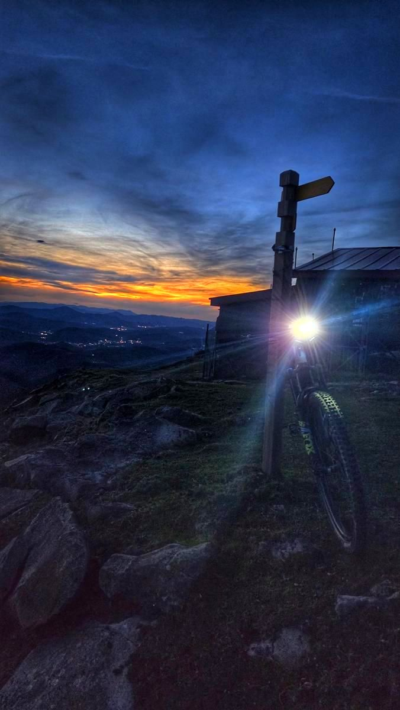
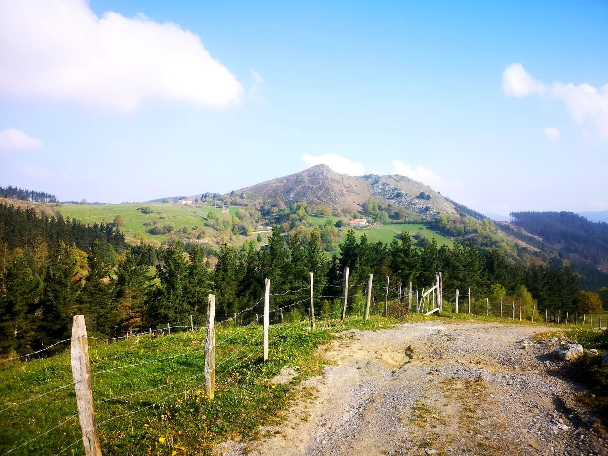
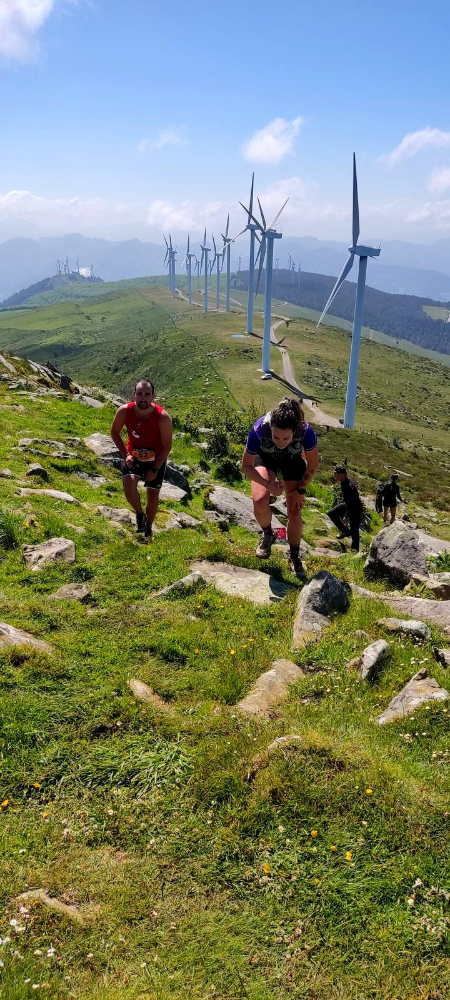
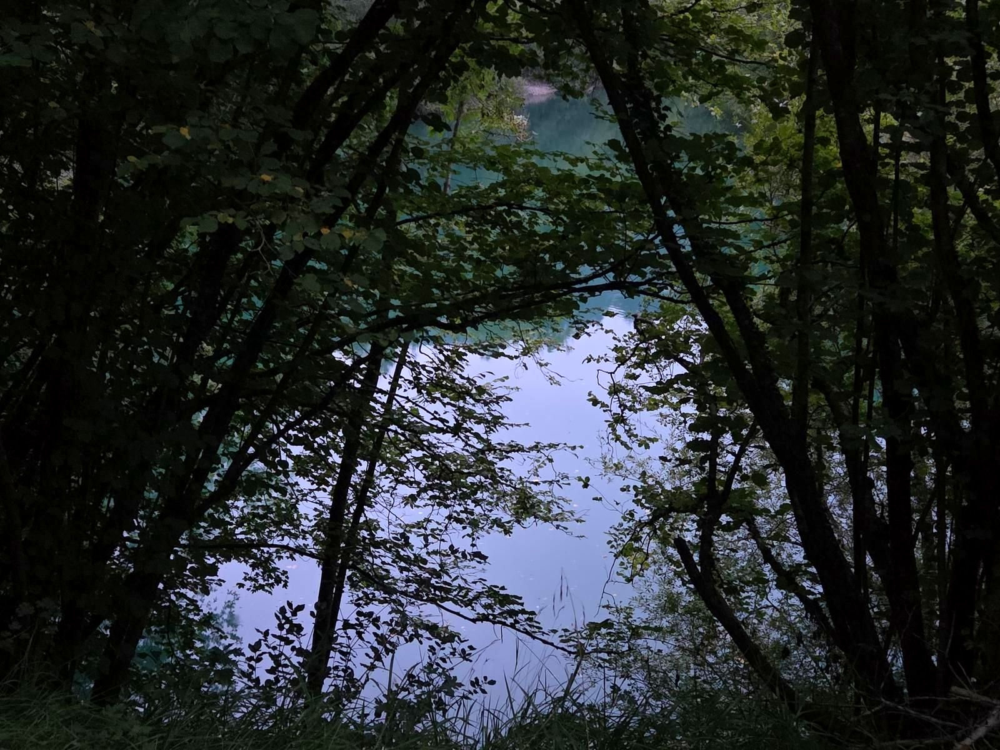
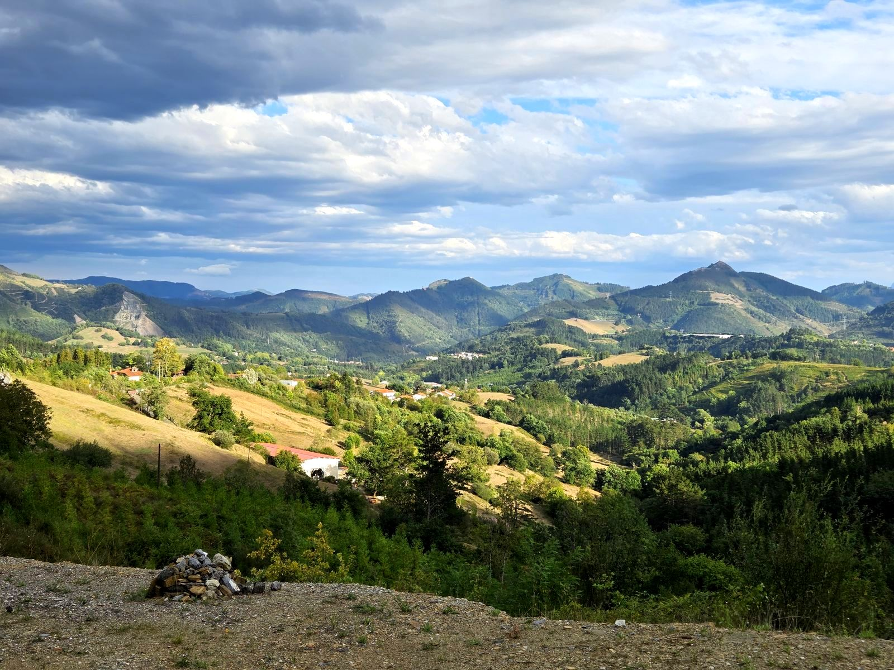
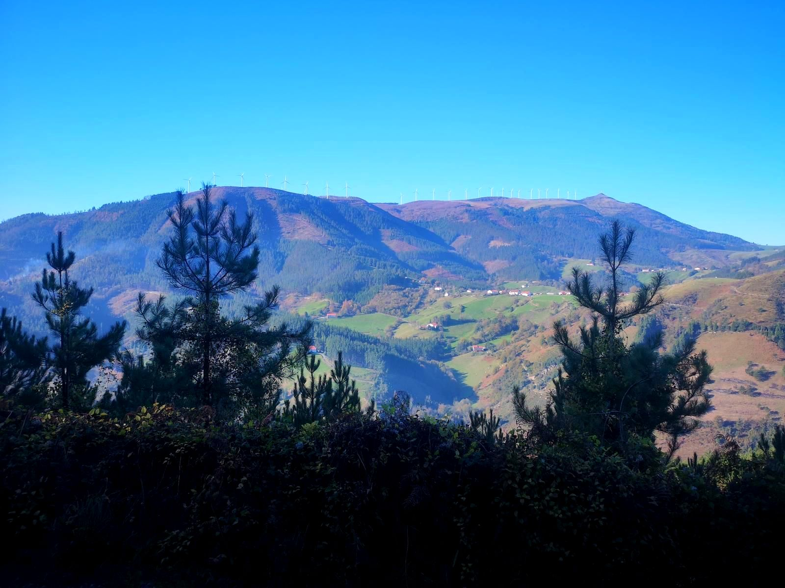
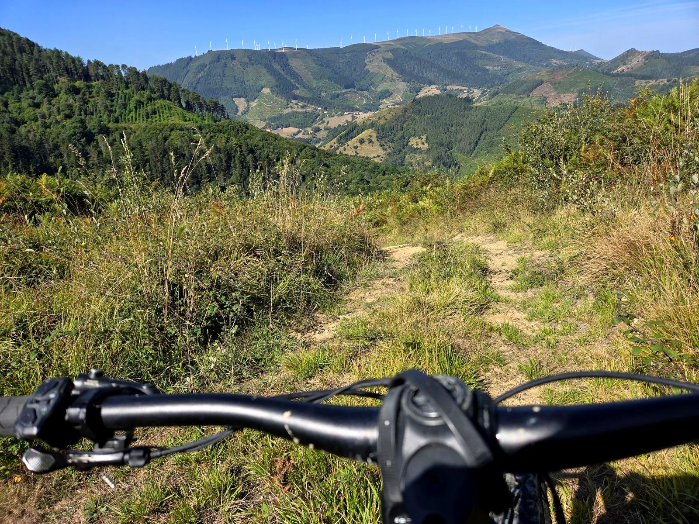

Mallabia/Barrios, montes y pueblos del entorno
Mallabia
a pie y en bici
Rutas por los barrios, montes y pueblos del entorno de Mallabia. Documentadas sobre el terreno, con datos de verdad, no de folleto.
¿Qué quieres hacer?

Trabakua, Barinaga, Iturreta, Bolibar, Zenarruza, Oiz y Zengotitagane
39,87 km · +1.700 m

Trabakua, Longa, Muniozguren
12,23 km · +250 m

Trabakua, Urko, Kalamua, Barinaga, Iturreta y Mendibil
27,0 km · +1.453 m

7 Pago Mendi Lasterketa 16K
16 km · +750 m

7 Pago Mendi Lasterketa 25km
25,5 km · +1.400 m

Trabakua, Zengotitagane y Maguna
33,44 km · +1.215 m

Trabakua, Aixola y Berriz
42,35 km · +1.115 m

Hiru Txikiak, Urko, Oiz y Egoarbitza desde Ermua
43,91 km · +2.291 m

Trabakua, paseo por el barrio Goita
5,34 km · +200 m

Trabakua, Mendibil, Olamendi y Arteta
11,38 km · +565 m

Trabakua Mendibil
6,08 km · +432 m

Trabakua, Iturreta e Iruzubieta
19,22 km · +769 m

Asuntza y Mundioko Koba
13,0 km · +404 m

Urko, Kalamua, San Migel y Mendibil
36,0 km · +1.676 m

Iturreta, Markina y Urregarai
30,5 km · +1.163 m

Urko, Egoarbitza, Santamañesar y Zengotitagane
34,1 km · +2.201 m

Trabakua, Barinaga y Iturreta
19,65 km · +975 m

Zengotitagane, Askako y San Cristóbal
26,9 km · +1.248 m

Trabakua, Asuntza y Urko
15,3 km · +873 m

Osmagain y Arietzu
4,3 km · +235 m

Zengotitagane, Axmakur y Oiz
11,1 km · +752 m

Zengotitagane, Iturzurigana y San Cristóbal Txiki
22,4 km · +1.029 m

Asuntza bira
16,5 km · +712 m

Iturzuri, Zengotitagane subida por la cascada de Gerea
10,76 km · +627 m

Zenarruza, San Kristobal y Zengotitagane
31,7 km · +1.161 m

Trabakua, Elgeta y Argiñeta
36,8 km · +1.002 m

Ur Jauziak Gerea
5,7 km · +415 m
No hay rutas de este tipo todavía.
Toca una ruta en el mapa para ver su información.
Descargar todos los tracks (ZIP, un GPX por ruta)¿No sabes cuál elegir?
Últimas rutas añadidas
Antes de salir
GPS obligatorio
Las rutas están documentadas directamente sobre el terreno, recorriéndolas paso a paso. La información recoge lo más útil que encontrarás por el camino —vistas, fuentes de agua, cruces y algunos puntos de referencia— para ayudarte durante el recorrido.
Las rutas no están señalizadas, por lo que es imprescindible llevar el track cargado en un GPS, reloj o dispositivo de navegación. La información que encontrarás aquí sirve de apoyo y para conocer mejor la ruta, pero no sustituye al track durante el recorrido.
Las rutas en bici están hechas con asistencia eléctrica estándar; la dificultad real puede variar según la bici y el ciclista.
Si te encuentras algo que haya cambiado —un árbol caído, un tramo cortado, señalización dañada—, avísame con el botón «Reportar incidencia» que hay en cada ficha de ruta.
Dónde aparcar
Puerto de Trabakua · 43,2105° N, 2,5461° O
A 5,7 km de Mallabia pueblo, unos 7 min en coche — casi todas las rutas salen de aquí, con buen aparcamiento.
Justo al lado del aparcamiento hay dos bares: café antes de salir, o cerveza y algo de comer al volver.
Cómo llegarDormir cerca
Si quieres quedarte a dormir por la zona, hay casas rurales muy cerca: Trabaku Goiko, junto al propio puerto de Trabakua; Longa Nagusia, en el barrio de Geria; y Zelai Baserria, en el barrio de Goita.